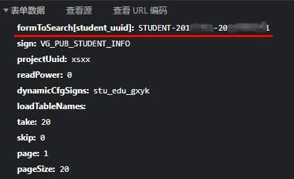
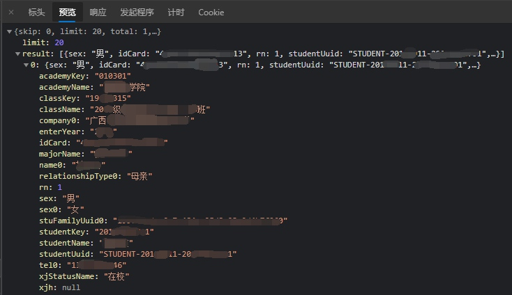
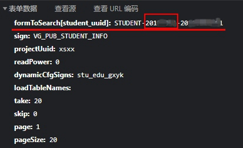

若是学工系统后台对访问者cookie有严格限制的话，传递学号就显得十分多余。 带着疑问我试着重新构建请求，修改传递的学号，结果惊人地发现可以获取到别人的个人信息！
泄露的个人信息包括基本的个人信息，如身份证号，学号，姓名，住址，照片等；家庭成员信息，如职业、性别、手机号、身份证号；银行卡号及受教育经历。 几乎所有能在学工系统上显示的个人信息都能被其他人获取到。 这些信息都是自己填写的，如果没有在学工系统上对自己的个人信息进行完善，那第三者获取到的将是空白。 但是学工系统对于学生十分重要，许多操作需要在上面完成，个人信息的完善更新是必须的，所以该漏洞的危害十分严重。 不过提交请求时的student_uuid并不完全由学号组成，还有一段不明意义的8位数字，这段数字将个人信息的泄露限制在一定的范围之内。
但不论如何，个人信息安全问题不容忽视，许多网络电信诈骗的起源便是个人敏感信息的泄露。我已将该漏洞相关情况上报至学校有关部门，相信不久便可得到修复。